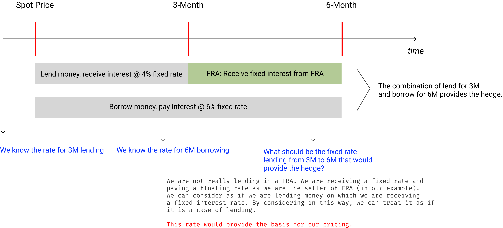
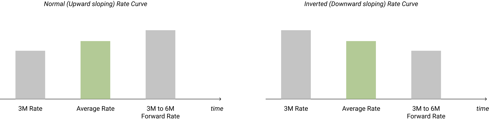

Pricing of Forward Rate Agreement (FRA)
Pricing and Valuation of derivatives are two concepts which some students of Finance find difficult to understand when they encounter it the first time. But as with any subject, if one tries hard to understand the basic concepts and practice them they would be able to eventually overcome the difficulty and would be able to price and value most derivatives.
In this article, we will discuss about the pricing of Forward Rate Agreement (FRA); we will discuss valuation of FRA in a separate article or blog.
The best way to understand pricing is through an example. Let's consider that we are Bank of America Merrill Lynch (a derivatives dealer) and a client comes to us and asks for a pricing of a "3 x 6" FRA, with the floating rate being a 3-month USD LIBOR rate. If we are interested in dealing then what would be our quote?
A FRA has two cash flows - fixed and floating. The fixed rate is known in advance at the time of the trade and that is the price of the derivatives that is required to be quoted by the dealer, the floating rate is unknown at the time of the trade and we would know that on the start date (actually, fixing date but for simplicity, let's say start date).
There are two market sides to a FRA - Buyer and Seller. The buyer of a FRA is the payer of the fixed rate (receiver of floating rate). The seller of the FRA is the receiver of the fixed rate (payer of floating rate). Let's say our client wants to buy FRA; that means we will be the seller of FRA. The client will pay us a fixed rate 3-months from now till 6-months
(which we need to calculate and quote to our client, and this is the pricing of a FRA), we will need to pay it the 3-month USD LIBOR rate for the same period. We know the fixed rate that we are receiving
(which we price and negotiate with our client) but we don't know the floating rate that we need to pay. If LIBOR increases then our floating rate obligations could be more than the fixed rate, resulting in a loss to us. If the LIBOR decreases then our floating rate obligation could be less than the fixed rate, resulting in a profit to us. Since we don't know the floating rate, we are exposed to the risk of LIBOR. We, as dealers, may or may not be willing to take this risk. We may want to hedge this risk in the cash market. But irrespective of whether we undertake this risk or not, for the purpose of pricing, we need to think as to how we can hedge this risk. So, for pricing purposes, what is required is the thought process of how we can hedge the risk in such a way that there is no arbitrage opportunity, irrespective of whether we really hedge or not. This concept is called as "no-arbitrage principle or no-arbitrage pricing", which is the way most derivatives are priced.
In our FRA, we are required to pay a floating rate 3-months from now till 6-months from now, and receive a fixed rate for the same period. The floating rate is market determined, and hence we can only think about and control the fixed rate in the transaction. The question is: what should be the fixed rate? If we could somehow borrow money (pay interest) for 6 months from now and lend money (receive interest) for 3 months from now, the hedge would be the price at we lend money for the remaining period of 3 months (3M from now till 6M from now) or vice-versa. By entering into these two cash trades, we would be able to figure out the fixed rate applicable for the FRA. The following diagram explains this concept better.

We can describe the above in the form of the following cash flow table.
| Trade |
Spot |
3-Month |
6-Month |
| Borrow 100 at spot for 3-months @ 4% p.a. |
+100 |
-101 |
- |
| Lend 100 at spot for 6-months @ 6% p.a. |
-100 |
- |
+103 |
| Net cash flow |
0 |
-101 |
+103 |
If we were to match our cash flows exactly then we need to borrow 101 at 3-Month period and repay 103 at 6-Month period. The 3-Month to 6-Month period is the period of our FRA and the amount of 2 is the accrued interest. This interest of 2 is on a borrowing of 101 for 3 months. We need to convert this cash flow into interest percentage. We can do this as below:
- Convert the cash inflow into interest rate. This will be the interest rate for 3 months.
- Convert the 3 months rate into an annual percentage rate.
The calculations are as below:
\[
Interest \; rate \; for \; 3 \; months = {2 \over 101} \; \text x \; 100 = 1.9801%
\]
\[
Annual \; interest \; rate = 1.9801 \text % \; \text x \; {12 \over 3} = 7.9204 \text %
\]
This 7.9204% is the fixed rate of our FRA. We priced this by using two underlying cash trades.
In other words, the FRA rate is linked to the underlying cash rates. If we consider only the two hedge trades: (1) Borrowing trade for 6M @ 6% and (2) Lending trade for 3M @ 4%, there is loss of 2% in the hedge (6% - 4%), which must be recovered from the FRA trade.
How do we know whether our pricing is correct?
One way to know is by looking at the cash flows. In a hedge, our cash flows will match exactly. Also, the borrowing rate for 6 months should be an average of the Spot/3M rate and 3M to 6M rate. If our average rate is 6% and if one of the rate is less than 6% then the other rate should be more than 6%. In our example, the 3M rate is 4% and the average rate is 6%, therefore the FRA rate should be more than 6%, which it indeed is. The following diagram shows how the rate works.

Another way to look at it is as follows: there are two cash flows in a FRA - fixed rate and floating rate. At the inception of the trade, the fixed price is set in such a manner that the present value of the fixed rate equals to the present value of the floating rate. The calculations are as below.
\[
Present \; value \; of \; fixed \; rate = fixed \; price \; calculated \; by \; us \; \text x \; e^{(-rt)}
\]
where,
Fixed price = 7.9204%
r = zero rate for 6 months (which in our example is 6%)
t = time period till interest accrual (which in our example is 6 months or 0.5).
\[
Present \; value \; of \; fixed \; rate = 7.9204 \; \text x \; e^{(-0.06 x 0.5)} = 7.6863
\]
We do not know the floating rate. We can assume it as 'x'. The present value of the floating rate is:
\[
Present \; value \; of \; floating \; rate = x \; \text x \; e^{(-0.06 x 0.5)}
\]
The present value of the fixed rate should be equal to the present value of the floating rate, such that:
\[
7.6863 = x \; \text x \; e^{(-0.06 x 0.5)}
\]
Solving for x, we get 7.9204%, which is our expectation and is the floating rate. Notice that fixed rate and the floating rate computed by us on the trade date are the same. This should be so because otherwise there will be arbitrage opportunities. As on the trade date, these two rates should be the same; they may vary later but on the trade date we expect both the rates to be the same for a fair game.
What would be the FRA quote?
FRAs are quoted in bid and ask format. What we calculated is only the price of the FRA. In our example, the dealer may quote the bid as 7.9200% and ask as 7.9206%. This means, if the dealer were to pay the fixed rate, it would pay 7.92%; if it were to receive the fixed rate, it would receive 7.9206%. The deal might be stuck at these quoted prices or different prices depending on trade negotiations. Moreover, the dealer may also add his administrative overheads, other expenses and pricing for counterparty credit risk to arrive at the bid-ask rates.
Did we eliminate all risk in our FRA?
No. We only used the concept of no-arbitrage pricing priciples to calculate the forward rate applicable for 3M to 6M period based on the current spot fixed prices for 3M and 6M periods as on the date the price was asked by our client. Spot prices change constantly and so do the floating rates.
Formula for pricing FRA
The above description is to understand the concept of pricing of FRA. But everyday computational purposes, we use formulas to get quick results. The following is a formula that is commonly used.
\[
Price \; of \; the \; fixed \; rate = \left[{(1 + Z_N \; \text x \; N) \over (1 + Z_M \; \text x \; M)} - 1\right] \text \ (N-M)
\]
Where,
Z
N = zero rate for the long period of N
Z
M = zero rate for teh short period of M
F
M,N = Forward rate for teh period between M and N
M, N = length of long and short periods expressed in year with N later than M.
\[
Price \; of \; the \; fixed \; rate = \left[{(1 + 6\text % \; \text x \; 0.5) \over (1 + 4 \text % \; \text x \; 0.25)} - 1\right] \text \ (0.5 - 0.25) = 7.9206 \text %
\]
END OF MY NOTES